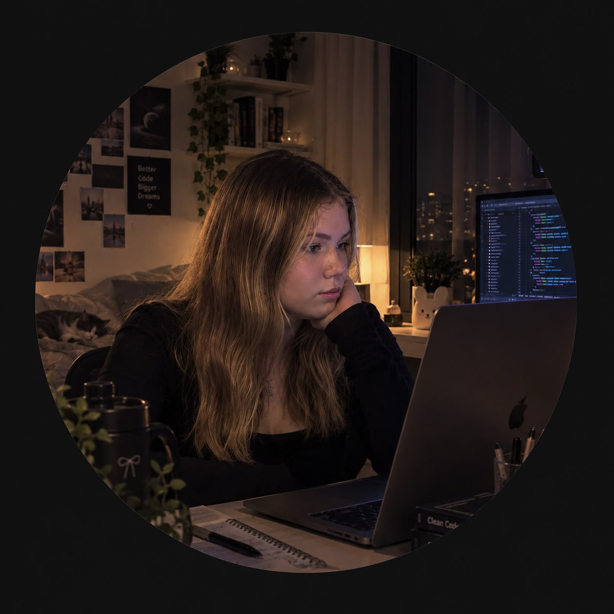

Sude Nur
Kılıç.
Yazılım Geliştirme · Web · Siber Güvenlik
Bazen bir fikrin peşine düşüp saatlerce kod yazıyorum, bazen de yepyeni bir konuyu en baştan öğreniyorum. Burası; öğrendiklerimi ve ürettiklerimi bir araya getirdiğim küçük köşem.

yeni bir başlangıç
Üzerinde çalıştıklarım.
01 Sude’nin Kitaplığı HAZİRAN 2026
Kitapları inceleme, filtreleme ve detaylarını görüntüleme özellikleri bulunan dinamik kitap platformu. Yönetim paneliyle kitap ve görseller eklenip düzenlenebiliyor.
02 Veteriner Klinik Otomasyonu MAYIS 2026
Hayvan ve sahip kayıtları, hasta yönetimi, kullanıcı girişi ve veritabanı işlemlerini bir araya getiren masaüstü uygulaması.
03 Güvenli Kasa WEB UYGULAMASI
Hesap bilgilerini düzenlemeye ve güçlü parolalar oluşturmaya yardımcı olan web tabanlı parola yöneticisi.
04 Minik-Plan-m WEB UYGULAMASI
Günlük planları ve etkinlikleri takip etmeyi kolaylaştıran kişisel takvim uygulaması.
Proje bağlantılarını GitHub profilimde bulabilirsin GitHub’a git ↗
Merakla öğren,
üreterek geliş.
Kırıkkale Üniversitesi Bilgisayar Programcılığı mezunuyum. Yazılım geliştirme ve web teknolojilerindeki altyapımı siber güvenlik merakımla büyütüyorum. Şimdi İstanbul Üniversitesi AUZEF’te İşletme lisans eğitimime devam ediyor; teknik bilgimi iş dünyasıyla buluşturmayı hedefliyorum.